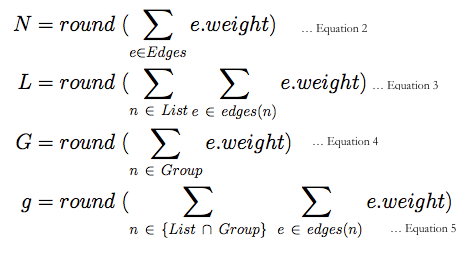
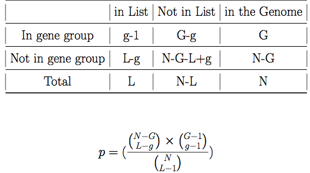

Gene List Statistics:
[b] Given a list of L contigs, GeneListStatistics.jar will report lists of functional annotation terms enriched in it. The EASE statistic, which is a modified version of Fisher Exact Test, is used to carry out gene list enrichment analysis. But, instead of using counts, the contig annotation graph generated by the TransferAnnotations.jar method is used for estimating the enrichment statistics. The edgeweigth of the Contig-Annotation graph is used instead of the counts in each categories.
 This has two advantages over regular gene list statistics. Firstly, this allows incorportation of quality of the annotation, number of sources with the annotation and the orthofuzz score, which captures the topological neighborhood of the contig in the sequence similarity network, to be incoporated into the scoring. Secondly, the method can candle all forms of annotations, irrespective of the type or source of annotation in the analysis. We incorporate, descriptions of terms, names of genes, gene ontology, protein domain terms, pathway names and types into the analysis.
{kind=link}
{kind=link}